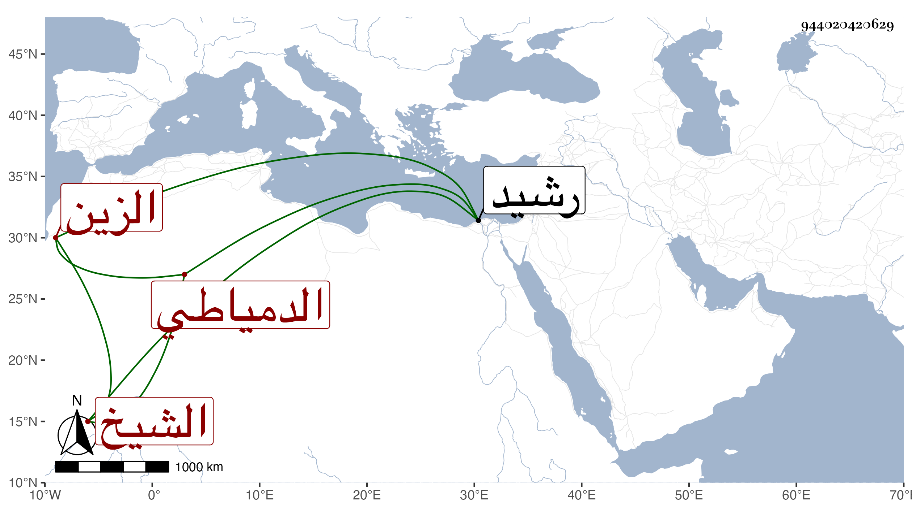

0902Sakhawi.DawLamic.ITO20230111-ara1.EIS1600.944020420629
Biography ID: 944020420629
374
عبد الرحمن بن محمد بن عمر بن عبد الله الزين الن الشيخ الدمياطي سبط الجمال يوسف العجمي ويعرف بابن الكعكي. ولد في خامس جمادى الآخرة سنة ثمان وسبعين وسبعمائة وحفظ القرآن واشتغل يسيرا وأجاز له ابن صديق وابن قوام وابن منيع والبالسي وفاطمة ابنة ابن المنجا في آخرين من الشاميين ولقيته برشيد فقرأت عليه أشياء ، وكان خيرا ساكنا معتقدا محبا في العلم وأهله. مات بعد الستين.
